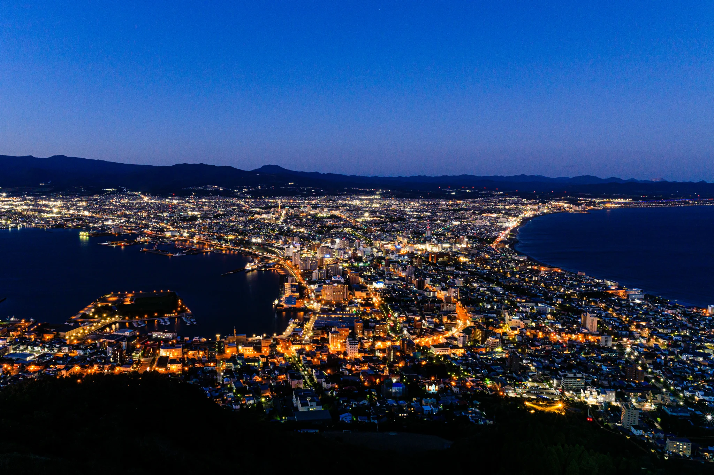
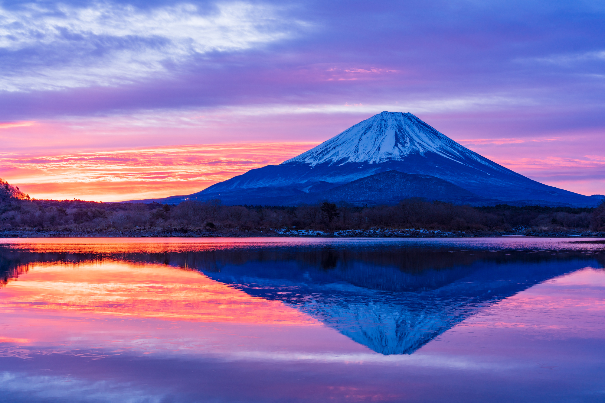

私の世界ランキング日本編！
ここでは私たちが選出した日本の絶景を紹介したいと思います！
No.1 裏見の滝の絶景・鍋ヶ滝[熊本県]

熊本県阿蘇郡小国町に位置する「鍋ヶ滝（なべがたき）」は、高さ約10メートル、幅約20メートルの美しい滝で、「水のカーテン」と称されるその姿が訪れる人々を魅了します。最大の特徴は、滝の裏側に回り込むことができる珍しい構造にあり、「裏見の滝」としても知られています。春には期間限定でライトアップが行われ、夏には涼を求める人々が多く訪れ、秋には紅葉との美しいコントラストが楽しめます。冬には水量が少なくなるものの、静かな佇まいがまた異なる魅力を放ちます。滝の周囲は整備されており、駐車場や遊歩道もあるため、観光地としてもアクセスしやすい点が魅力です。訪れる際は、足元が滑りやすいため歩きやすい靴を履いて行くのがオススメです。
| 住所 | 〒869-2502 熊本県阿蘇郡小国町黒渕 |
|---|---|
| アクセス | JR豊肥本線阿蘇駅から産交バス杖立温泉行きで1時間、ゆうステーション下車、タクシーで15分、大分自動車道九重ICより約45分 |
| URL | https://ogunitown.info/nabegataki |
No.2 函館山[北海道]

北海道函館市にある標高334メートルの函館山は、国内外から多くの観光客が訪れる絶景スポットです。特に山頂から望む夜景は「100万ドルの夜景」とも称され、世界三大夜景の一つとして有名です。市街地や津軽海峡を一望でき、夕暮れから夜にかけての景色は格別です。ロープウェイやバスで手軽にアクセスでき、昼は自然散策、夜は幻想的な夜景を楽しめる、函館観光には欠かせない名所です。
| 住所 | 〒040-0000 北海道函館市函館山 |
|---|---|
| アクセス | 函館駅前より市電で十字街か宝来町で下車、ロープウェイ山麓からロープウェイ山頂へ |
| URL | https://www.visit-hokkaido.jp/spot/detail_10095.html |
No.3 富士山[静岡県兼山梨県]

富士山は、標高3,776メートルを誇る日本一高い山で、静岡県と山梨県にまたがる活火山です。その美しい円錐形の姿は古くから日本の象徴とされ、多くの絵画や文学にも登場してきました。2013年には「信仰の対象と芸術の源泉」として世界文化遺産に登録され、国内外から多くの登山者や観光客が訪れています。山頂から見るご来光や、麓から望む景色は圧巻で、四季折々に違った表情を楽しむことができます。
| 所在地 | 静岡県 富士宮市 裾野市 富士市 御殿場市 駿東郡小山町 山梨県 富士吉田市 南都留郡鳴沢村 |
|---|---|
| アクセス | 静岡県側には、富士宮口・御殿場口・須走口の3つのルートがあります。 富士宮ルートには、東海道新幹線三島駅もしくは新富士駅、JR東海道線富士駅、JR身延線富士宮駅から運行している登山バスを利用しましょう。 |
| URL | https://www.visit-hokkaido.jp/spot/detail_10095.html |